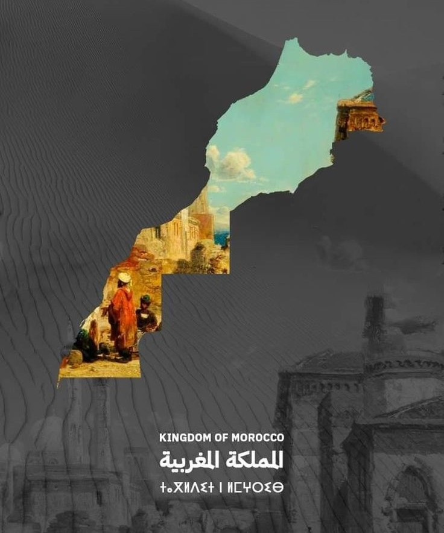

⚡ Journey Highlights & Must-Sees
- The Great Dunes of Erg Chebbi: Climb towering 150-meter golden sand dunes for unforgettable Saharan sunrises and sunsets.
- Private Luxury Glamping: Spacious canvas pavilions with plush King beds, private ensuite flushing bathrooms, hot showers, and electricity.
- Sunset & Sunrise Camel Treks: Gentle, unhurried camel caravans led by native Amazigh nomads across pristine sand ridges.
- UNESCO Ksar Aït Benhaddou: Private guided exploration of the ancient earthen fortress seen in Gladiator and Game of Thrones.
- Dades Valley & Todra Canyons: Marvel at 300-meter sheer limestone gorge walls and lush date palm oases.
- Traditional Berber Campfire: Live Saharan drumming, Gnawa melodies, and authentic tagine feasts beneath the Milky Way.
The Real Sahara Experience: Unhurried, Private, Authentic
The Sahara Desert is not just a destination; it is an awakening of the senses. Vast, silent, and mesmerizingly ancient, the dunes of Erg Chebbi outside Merzouga represent Morocco at its most timeless. However, the 500-kilometer overland route from Marrakech or Fes can quickly turn exhausting if attempted on a rigid, crowded group bus.
With Roam Morocco, your desert adventure is 100% private. You travel in an executive, air-conditioned 4x4 vehicle with a dedicated native Berber chauffeur whose English is fluent and whose deep hospitality turns the journey itself into a highlight. You decide when to pause for panoramic photographs along the Tizi n'Tichka pass, where to stop for fresh mint tea, and how long to savor lunch in the Draa Valley.
"In the desert, the silence is so immense it feels physical. Sitting atop Erg Chebbi as the sun dips below the Sahara is one of the single greatest travel memories on earth."
— ROAM MOROCCO FIELD DISPATCHWhether you choose our classic 3-Day Marrakech-to-Merzouga circuit or our grand Marrakech-to-Fes crossing, you will avoid tourist traps and experience the authentic pulse of southern Morocco.
Day-by-Day Route Itinerary SAMPLE 3-DAY CIRCUIT
Marrakech → Tizi n'Tichka Pass → Aït Benhaddou → Dades Gorges
Your private driver greets you at your Marrakech riad at 08:00 AM. We climb the dramatic winding roads of the High Atlas Mountains via the Tizi n'Tichka pass (2,260m), stopping for dramatic mountain photos. Descend into the UNESCO World Heritage site of Ksar Aït Benhaddou for an authentic walking tour. We continue through Ouarzazate (Morocco's Hollywood) and the fragrant Valley of Roses before settling into a boutique Kasbah-hotel in Dades Valley for dinner.
Dades Valley → Todra Gorge → Tinghir Oasis → Erg Chebbi Dunes
After breakfast overlooking the jagged Dades rock formations, we head toward the towering Todra Gorge. Walk through the 300-meter canyon where rock climbers test their skill alongside local shepherds. After a peaceful lunch in Tinghir, we navigate south past Erfoud's fossil workshops into the sands of Merzouga. Mount your dromedary camel for a sunset trek over golden dunes into your VIP luxury desert camp. Enjoy a candlelit Moroccan dinner, live Berber music around the campfire, and stargazing.
Erg Chebbi → Draa Valley → Marrakech (OR Ziz Valley → Fes)
Rise early for an awe-inspiring sunrise over the quiet Saharan ridge. After a hearty camp breakfast and hot shower, your 4x4 carries you back from the dunes. You can choose to return to Marrakech through the million-palm Draa Valley, OR proceed northward toward Fes through the majestic Ziz Gorge, Middle Atlas cedar forests (home to wild Barbary macaques), and the Alpine ski village of Ifrane, arriving in the evening at your riad.
🗺️ The Journey on the Map
This circuit cuts directly through the dramatic geographical spine of Morocco: from the imperial gardens of Marrakech over the snowcaps of the Atlas to the Sahara dunes.

What's Included in Your Private Tour
✔ INCLUDED IN YOUR PACKAGE
- Dedicated executive 4x4 or Mercedes VIP minivan with A/C
- Professional, English-speaking Berber chauffeur
- All vehicle fuel, highway tolls & parking fees
- 1 Night in boutique Kasbah-hotel in Dades (private room)
- 1 Night in luxury Sahara desert camp (private en-suite tent)
- Private camel trek for sunset & sunrise over Erg Chebbi
- Breakfasts and multi-course traditional dinners
- Local certified guide at UNESCO Aït Benhaddou
- Door-to-door pickup & drop-off at your riads or airport
✕ NOT INCLUDED
- International flight tickets to/from Morocco
- Mid-day lunches and personal beverages
- Discretionary tips for chauffeur and local guides
- Personal travel & medical insurance
- Optional quad biking or buggy rental in dunes
"Our private desert tour with Roam Morocco exceeded every expectation. Our driver was thoughtful, knowledgeable, and a skilled driver through the Atlas. The luxury camp in Merzouga felt like something out of a dream—hot water in the middle of the dunes and unbelievable hospitality!"
— MARK & EMILY D., SAN FRANCISCO (USA)Frequently Asked Questions: Sahara Desert Tours
How long does it take to drive from Marrakech to Erg Chebbi?
The total driving distance is approximately 560 km (around 9–10 hours of road time). Rather than making the exhausting trek in one day, our private tours always split the route with an overnight stop in the stunning Dades Valley or Skoura Oasis, turning the drive into an enjoyable sight-seeing adventure.
Can we end our tour in Fes instead of returning to Marrakech?
Yes, absolutely! The Marrakech to Fes desert circuit (or vice versa) is one of our most highly recommended routes. It allows you to experience the southern Kasbahs, the Sahara, the Middle Atlas Mountains, and arrive in the spiritual capital of Fes without backtracking.
What facilities are inside the luxury desert camp tents?
Our luxury desert camps provide high-end comfort: real king or twin beds with fine linens, private ensuite bathrooms featuring western flushing toilets, hot pressurized showers, handcrafted furnishings, and solar-powered electric lighting to charge cameras and phones.
What is the best time of year to visit Erg Chebbi?
The ideal months are from October through May, when daytime temperatures are pleasant (20°C–28°C) and nights are crisp. Mid-summer (July and August) can see extreme heat exceeding 45°C, which is why we recommend early morning and late afternoon desert activities during summer months.